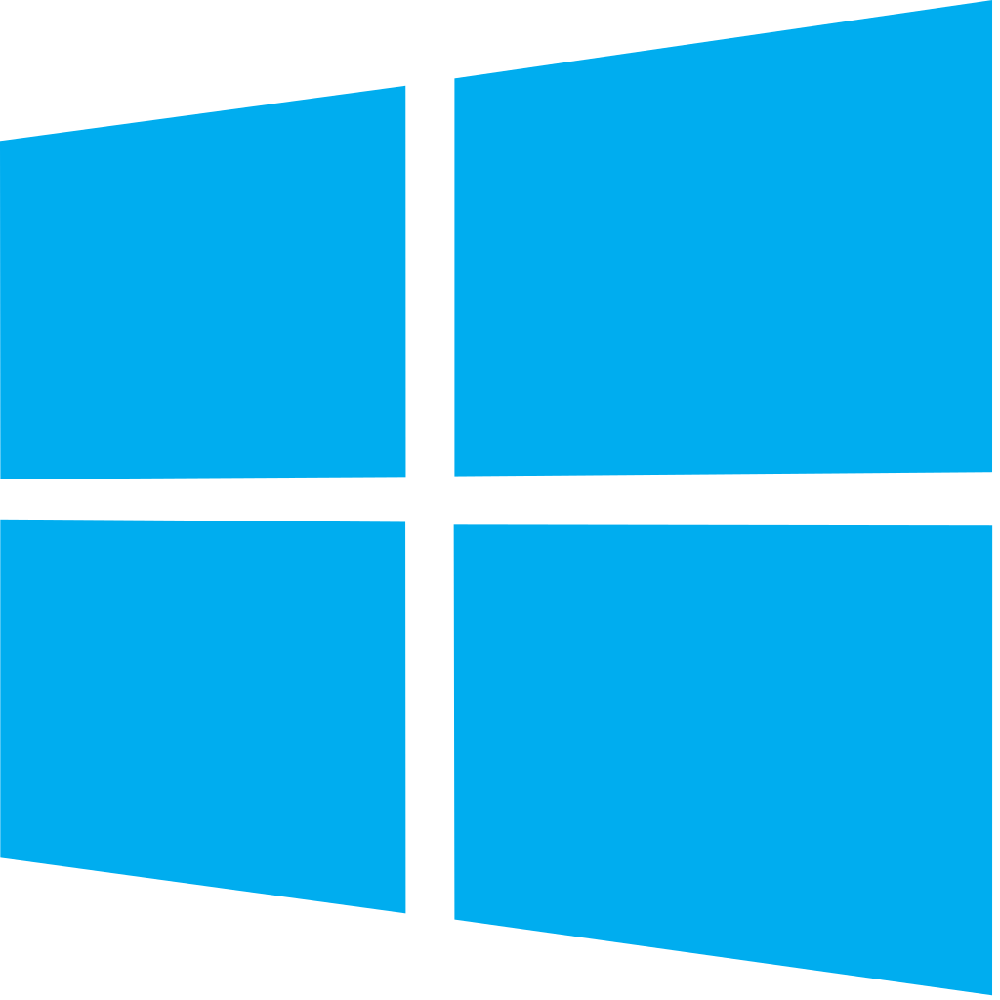

Браузеры:
Яндекс
В отличие от «застывшего» в двухтысячных Google Chrome разработчики компании Яндекс с завидным постоянством добавляют дополнительный функционал в созданный браузер, стремительно расширяя аудиторию его пользователей.
Вся концепция Яндекс.Браузера направлена на удобство использования конечным потребителем. Он полностью настраивается под нужды каждого конкретного пользователя. Интуитивно понятный интерфейс и грамотное расположение настроек создает среду для эффективной работы и возможности полной кастомизации.
Несмотря на свою кажущуюся простоту, Яндекс.Браузер сохраняет весь арсенал инструментов для сообщества IT-специалистов (инспектор страниц, просмотр исходного кода веб-элементов).
Интерфейс программы прост и понятен. После первой установки пользователь видит наверху открытые вкладки (свободно перемещаемые), адресную строку, а также «табло» с любимыми сайтами.
Плюсы и минусы яндекс браузера
Давайте выделим основные преимущества Яндекс.Браузера:
И имеет следующие недостатки:
Вердикт
Яндекс.Браузер отлично подойдет каждому пользователю для быстрого поиска информации, просмотра видео-контента, прослушивания музыки и других развлечений. Наличие дополнительных расширений, постоянно появляющихся новшеств становится отличной альтернативой как для профессиональных разработчиков, так и для простых пользователей.
 Google Chrome
Google Chrome
Google Chrome направлен на повышение безопасности, скорости и стабильности. А 9 июня 2009 года разработчики Google Chrome в своём интервью для неофициального сообщества пользователей обозначили стратегию дальнейшего развития своего продукта, которая заключается в том, что браузер будет иметь максимально высокую скорость работы и минимально допустимую функциональность, а все дополнительные функции планируется внедрять при помощи расширений[
Безопасность
Chrome периодически загружает обновления двух чёрных списков (один для фишинг-сайтов и один для сайтов, содержащих вредоносное ПО) и предупреждает пользователя, когда тот пытается посетить вредоносный сайт.
Chrome, как правило, создаёт для каждой вкладки отдельный процесс, чтобы не допустить ситуации, при которой содержимое одной вкладки имеет возможность влиять на содержимое другой (также в случае, если процесс обработки содержимого вкладки зависнет, его можно будет завершить без риска потери данных других вкладок). Процессу вкладки даётся наименьшее число привилегий, процесс может совершать вычисления, но не может производить чтение или запись. Образно выражаясь, вкладка находится в песочнице.
Как правило, плагины (наиболее популярный — Adobe Flash Player), не являются частью браузера и не могут быть встроены в песочницу. Таким образом безопасное исполнение кода страниц сводится на нет плагинами, от которых ОС не имеет дополнительной защиты. Для решения этой проблемы были предприняты некоторые меры:
Рекламный фильтр
В 2018 году компания Google во взаимодействии с организацией Coalition for Better Ads в своем браузере Chrome начала фильтровать рекламу на сайтах в Северной Америке и Европе. Под блокировку попадали наиболее агрессивные и навязчивые способы подачи материала — всплывающие окна, видеоролики со звуком, предупреждения с обратным отсчетом и т. д. Систематизированный список состоит из 12 позиций и размещен на сайте коалиции. С 9 июля 2019 года данная функция заработала во всех странах мира[32][33].
Скорость
Google Chrome использует высокопроизводительный движок обработки JavaScript V8. Также для ускорения загрузки страниц Google Chrome может использовать упреждающее чтение DNS[37]
Стабильность
В Chrome используется многопроцессная архитектура, и каждой вкладке или плагину, в большинстве случаев, соответствует отдельный процесс. Эта процедура, называемая изоляцией процессов, исключает вероятность того, что вкладки будут мешать друг другу[38]. Также злоумышленник, используя одну вкладку, не сможет подсмотреть, что происходит в другой, и, если на одной вкладке произойдёт сбой, это не помешает работе всего браузера — нужно будет просто закрыть данную вкладку.
Интерфейс
По умолчанию интерфейс Google Chrome включает кнопки: назад, вперед, обновить/остановить загрузку, добавить текущую страницу в закладки. Кнопка перехода на главную страницу может быть включена.
Панель вкладок является основным компонентом интерфейса и находится в верхней части окна, а не под строкой адреса. Это изменение выглядит достаточно контрастно по сравнению со многими другими браузерами. Вкладка легким перетаскиванием на свободное место может быть перенесена в отдельное окно (возможен также и обратный вариант). Каждая вкладка имеет свой собственный набор элементов, в том числе Omnibox (поле, совмещающее в себе адресную строку и строку поиска).
Одной из отличительных черт Chrome является страница быстрого доступа, которая может заменять домашнюю страницу и открывается при создании новой вкладки. На странице быстрого доступа содержится 8 наиболее посещаемых веб-сайтов (отображаются в виде маленьких снимков веб-страниц), недавно закрытые вкладки, советы по использованию Chrome и синхронизация закладок[39]. По желанию пользователь может изменить внешний вид страницы, добавив или удалив одну из опций.
Chrome позволяет пользователю создавать локальные ярлыки на приложения (а именно — их страницы). При запуске такого ярлыка страница, на которую он ведет, открывается в Chrome, но без элементов интерфейса (за исключением заголовка окна).
Поиск на боковой панели: при выделении предложении или слова с просматриваемой им страницы откроется боковая панель, на которой будут отражены результаты поиска (там будут показаны ссылки, изображения, фотографии и другой найденный контент, в том числе видеоролики), за счет этого заметно ускоряется процесс нахождения нужной информации в Сети. Данная функция появилась в середине сентября 2022
Microsoft Edge
Microsoft Edge — браузер от известной компании Microsoft, который был выпущен еще в 2015 году, однако стал набирать популярность после обновления в 2020 году. В сети уже появилось много отзывов о его работе. Веб-браузер доступен для новых версий Windows (7, 8, 8.1, 10), Android, iOS и macOS. Пользователи Linux пока не смогут испытать работу Edge, но разработчики уже работают над этим. Теперь это конкурентноспособный браузер, который может посоревноваться даже с Google Chrome.
Новый браузер создан на основе Chromium, на базе которого сегодня работают самые популярные в мире поисковики. Такое решение разработчиков объясняется стремлением к улучшению браузера и удобства пользователей. И сложно поспорить с тем, что Microsoft Edge получился отличным браузером, который вполне заслуживает звания одного из лучших. Давайте рассмотрим все преимущества и недостатки нового Edge.
Преимущества:
Главное преимущество Microsoft Edge в сравнении со старой версией — мультиплатформенность, что позволяет пользователям серфить в браузере с любого устройства. Напомним, что раньше Edge был доступен только на платформах Виндовс и Андроид. Сегодня разработчики сделали официальные версии для macOS и iOS.
Те, кто уже испробовал новый браузер утверждают, что он просто летает. И все благодаря тому, что в Microsoft пересмотрели свой подход и отказались от устаревших технологий. Сегодня Edge — максимально легкий браузер, который по скорости даже лучше, чем Chrome.
Недостатки:
Некоторые считают недостатком браузера от Майкрософт — схожесть с Chrome. На самом деле, однозначного минуса в этом нет, для кого-то такое решение будет очень удобным.
Еще одна проблема — недостаточное количество расширений. Но разработчики активно работают над решением и позволяют скачивать приложения других браузеров. Но об этом немного позже.
 Opera
Opera
Opera – это один из самых популярных браузеров, появившийся на свет больше 20 лет назад. Во всем мире миллионы пользователей заходят в интернет именно через эту программу. Особенно Опера популярна в России. Причиной успеха являются скорость работы браузера, удобный дизайн и большое количество возможностей.
Возможности программы
Разработчики Оперы всегда отмечали, что главное отличие их продукта – это высокая скорость работы. Кроме этого, есть еще ряд функций, которые понравятся пользователям. Перечислим основные преимущества и возможности браузера, делающих его очень востребованным сегодня.
Низкое потребление ресурсов ПК.
Не секрет, что пользователи Chrome и других продуктов, созданных на его движке, жалуются на высокое потребление ресурсов компьютера. Из-за этого устройство начинает работать медленнее. Разработчикам Оперы удалось оптимизировать работу своей программы таким образом, чтобы она могла работать быстро и при этом не затрачивался минимум ресурсов компьютера.
Магазин дополнений.
Расширить функционал программы можно через собственный специализированный магазин расширений https://addons.opera.com/ru/extensions/. В нем содержится несколько тысяч сервисов, делающих работу с программой более удобной. Кроме того, пользователи Opera могут устанавливать и дополнения для браузера Chrome.
Блокировка рекламы.
У браузера есть встроенный блокировщик рекламы, которая тормозит загрузку страниц. Также в магазине можно установить дополнительные расширения схожего функционала.
Низкое потребление энергии
Владельцы ноутбуков по достоинству оценят эту возможность. Ведь путешествуя, учась или находясь в рабочей поездке не всегда есть доступ к розетке. Энергосберегающий режим позволяет продлить время работы ноутбука почти в 1,5 раза. На некоторых моделях устройств это дополнительные 3 – 4 часа
Встроенный VPN.
Доступ на некоторые сайты в нашей стране закрыт и не всегда на это есть разумная причина. Браузер Opera обладает встроенным VPN расширением, которое позволяет попасть на заблокированные провайдером сайты. Функция эта бесплатная и проста в управлении.
Режим Турбо.
Эта функция полезна при плохом интернет соединении. Активировав ее, пользователь будет получать данные из сети через специальные серверы. На них информация проходит сжатие и оптимизацию, после чего уже доставляется на компьютер. Весь этот процесс занимает считанные секунды, поэтому пользователь может наблюдать, как тормозящий сайт быстро загружается.
Просмотр видео в отдельном окне.
У современного человека зачастую не хватает времени и приходится заниматься несколькими делами одновременно. Благодаря новому Opera можно смотреть видео в интернете, параллельно просматривая почту и социальные сети или работать с другим софтом.
Горячие клавиши.
Быстро включить какую-либо функцию программы можно с помощью комбинации 2-3 кнопок на клавиатуре. Помимо стандартных вариантов, программа дает возможность самостоятельно указать, нажатие каких клавиш запустит тот или иной процесс.
Экспресс-панель.
На главной странице браузера размещаются самые любимые вкладки пользователя. Это позволяет быстро открыть нужный сайт. Кроме того, можно редактировать их и создавать группы сайтов по определенным тематикам.
Операционные Системы:
Windows 10
Windows 10 - это операционная система для ПК, ноутбуков, планшетных и гибридных устройств с сенсорным экраном, консоли Xbox One и прочей компьютерной техники. Официально была выпущена 29 июля 2015 года. Поддерживаемые архитектуры процессоров - x86-64, IA-32, ARM. Стала новым форматом операционной системы от Microsoft, дорабатываемой и обновляемой наряду с массовым её использованием. Функциональные обновления Windows 10 поставляются два раза в год и обычно меняют версию операционной системы. Windows 10 – первая Windows со своими отдельными версиями. Их кодировка отражает число и год поставки функциональных обновлений, версии имеют свои сроки обслуживания компанией Microsoft.
В Windows 10 уживаются два типа функционала – классический и современный. Классический – это тот, что система унаследовала от версий-предшественниц. Это настройки в формате панели управления, различные штатные инструменты – командная строка, административные MSC-утилиты, оснастки MMC, редактор реестра, диспетчер задач, проводник, блокнот, короче, всё, что было в Windows 7.
Современный функционал Windows 10 – это функционал формата UWP (Universal Windows Platform), формата универсальных приложений. Это встроенные в систему приложения «Параметры», «Безопасность Windows», «Почта», «Фотографии», «Ваш телефон» и т.п., а также приложения, устанавливаемые из Microsoft Store.
Всё время с момента выпуска Windows 10 уступала в популярности Windows 7, и лишь по итогам 2019 года первая смогла обогнать вторую. С 2019 года и по сегодняшний день Windows 10 является самой популярной в мире операционной системой для десктопных устройств. После прекращения поддержки Windows 7 у Windows 10 более нет серьёзных конкурентов, путь этой операционной системы к популярности свободен и открыт. Процветание ей обеспечено её создателем и производителями процессоров для десктопных устройств: компания Microsoft не продвигает более никакую иную из своих операционных систем, а многие современные процессоры не поддерживают версии Windows ниже 10.
 Ubuntu
Ubuntu
Ubuntu — это операционная система, основанная на операционной системе Linux с открытым исходным кодом. Прежде чем мы углубимся в детали Ubuntu, давайте сначала поймем, что такое операционная система.
Преимуществ Ubuntu, Windows и других операционных систем достаточно. Ниже мы рассмотрим преимущества Ubuntu.
Ubuntu бесплатен.
Самым первым преимуществом Ubuntu является то, что он полностью бесплатный. В отличие от Mac OS или Windows, вам не нужно платить за его использование.
Ubuntu может быть легко настроен
несмотря на то, что Windows теперь предоставляет некоторые функции настройки, но Ubuntu гораздо более настраиваемый по сравнению с любой другой популярной ОС. Это гарантирует, что вы сможете использовать его точно в соответствии с вашими требованиями. Вы можете настроить каждый аспект пользовательского интерфейса, который гарантирует, что вы сможете сделать свою машину намного более эффективной.
Ubuntu более безопасен
у большинства операционных систем есть свои проблемы. Ubuntu, однако, гораздо более безопасен по сравнению с некоторыми другими операционными системами, такими как Windows. Вам не нужно вносить плату, чтобы защитить свой компьютер, когда он работает в этой ОС. Это причина, почему стоит пойти на Ubuntu.
Он может работать с флешки
Вам не нужно устанавливать его для запуска. Вы можете просто загрузить его в накопитель и запустить его оттуда. Это также означает, что вы сможете носить свою ОС с собой куда угодно.
Хороший вариант для разработки
если вы программируете или кодируете, это один из лучших вариантов для вас. Он предоставляет вам довольно много опций по умолчанию, которые гарантируют, что вы сможете сразу же написать код. Текстовые редакторы, а также офисные пакеты, включены напрямую. Это означает, что вам не нужно устанавливать отдельные компиляторы или программное обеспечение в вашей ОС, чтобы начать кодирование.
Частые обновления
поддержка, предоставляемая Ubuntu, намного лучше по сравнению с другими операционными системами. Любая ошибка или уязвимость исправляются довольно быстро. Более того, с каждым обновлением у вас будет множество новых функций. Это поможет вам сделать вашу ОС более эффективной последовательно.
Виртуальные рабочие столы
Ubuntu предлагает вам несколько рабочих столов, как на экране вашего смартфона. Вы можете переключаться между различными экранами, чтобы работать с другим программным обеспечением. Это гарантирует, что вы сможете значительно повысить свою производительность.
Это лишь некоторые из преимуществ этой ОС над другими операционными системами. В целом, это не только проще в использовании, но и полностью настраиваемый, что делает его намного лучше по сравнению с другими операционными системами.
 RedOS
RedOS
РЕД ОС - это отечественная операционная система на базе Linux, призванная заменить зарубежные аналоги в государственных учреждения. Она отлично подойдет для рабочих станций и серверов, но вот на домашний компьютер, я бы точно не стал ее устанавливать.
Возможности
РЕД ОС позволяет организовать доверительные отношения между создаваемой инфраструктурой на базе Samba DC, FreeIPA и существующим лесом Microsoft AD.
Основные возможности:
Антивирусные Программы:
Антивирус Касперского
Антивирус Касперского — один из самых распространенных в мире. Он «родился» в 1990-м году. Изначально у него было другое название, а теперь мы его знаем под таким именем. Но от имени мало что зависит, главное, что программа превосходно работает. Но есть и нюансы
Антивирус Касперского прекрасно защищает от самых различных вирусов, проверяет все письма электронной почты. Блокирует ссылки с незащищенных программ. Автоматически обновляет базы программ. Представляет различные режимы работы и автоматически настраивает программы во время установки.
Так как компьютерные технологии постоянно улучшаются, то Компания Касперского также не отстает, создавая новые программы для новых устройств. Она предоставляет клиентам полный спектр необходимых услуг по обеспечению безопасности компьютера:
Среди положительных комментариев можно выделить такие:
 Dr. Web
Dr. Web
Одна из популярных антивирусных программ, которая заслуживает внимания – Dr.Web. Это кроссплатформенное (OS X, Linux, Windows) антивирусное программное обеспечение российских разработчиков для защиты от приложений-шуток, шпионских, троянских и рекламных программ, а также от хакерских утилит, червей и руткитов.
Плюсы Dr.Web
Возможность установки на инфицированный компьютер.
Благодаря особому алгоритму инсталляции, Dr.Web еще на стадии установки начинает сканирование файлов компьютера с использованием актуальных баз сигнатур вирусного программного обеспечения.
Несигнатурный метод обнаружения.
Этот антивирус способен обнаруживать вредоносные программы даже в том случае, когда их еще нет в списках баз данных. Такое стало возможным благодаря особому эвристическому анализу, что делает защиту более эффективной.
Хорошая поддержка
Вследствие высокого уровня поддержки со стороны разработчиков, обновления баз происходит регулярно, порой выпуск обновлений выходит уже через несколько минут с момента обнаружения нового вируса.
Поддержка большого числа форматов архиваторов и упаковщиков.
Эта способность антивирусной программы позволяет эффективно сканировать архивные массивы данных, где зачастую и скрыты вредоносные приложения.
Технология Shield
Модуль, реализованный в виде драйвера операционной системы, позволяет обнаруживать и обезвреживать зараженные объекты, которые находятся в библиотеках компонентов системы.
Низкая ресурсозависимость.
Для стабильной работы антивируса не нужно много ресурсов компьютера. Потребляя небольшой объем оперативной памяти и не значительно нагружая процессор, Dr.Web будет очень актуален для владельцев старого «железа».
Компактность.
Несмотря на внушительный список известных вирусов, база и обновления для баз весьма небольшого размера, это способствует более быстрой работе сканера.